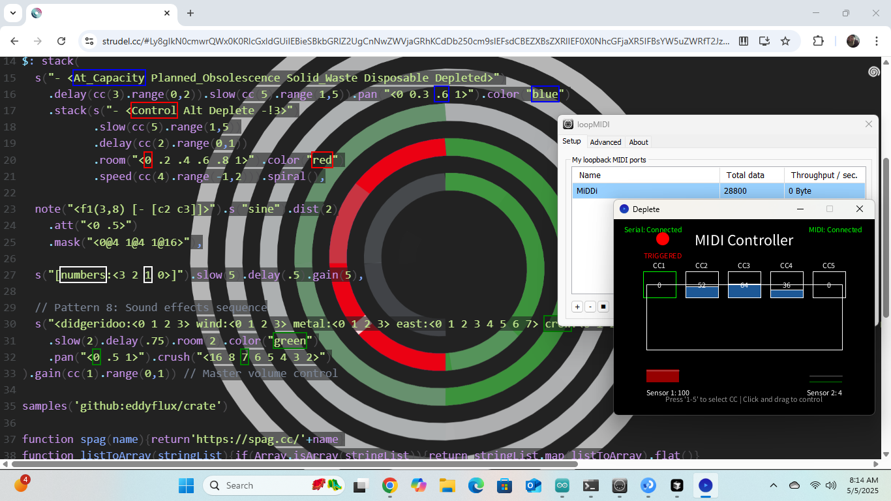
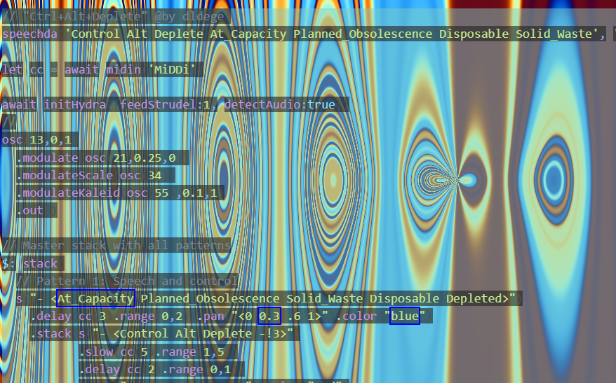

Control+Alt+Deplete is a MIDI-controlled sound sculpture built from a dead tree and discarded electronics. Touch is not a button that plays a file. Two analog sensors on the trunk write a serial stream; a Processing sketch turns those voltages into MIDI Control Change messages on a virtual loopMIDI port named MiDDi; a live Strudel patch with Hydra visuals reads those CCs as gain, delay, speed, and speech. The tree is the mixer.
It was a three-person studio project — Leah Johnson, Alyssa Beltman, and me — for Iowa State’s DSN S 5460 / At Capacity exhibition. I designed the sensor hardware, Arduino firmware, Processing MIDI bridge, Strudel score, and the unattended show computer. They built the sculpture with me: a tree found dead near campus, mounted to a pallet, mutated with motherboards, cables, crochet, ceramics, and a fused PD8 power harness. Three days in the Student Innovation Center atrium. No attendant. Interaction was meant to be discovered, not labeled.
A solitary tree mutated with electronic waste, emerging from a landfill — a monument to overconsumption that you can play.
View Project View Code Open Strudel Patch
- Sensors
- 2 analog · Arduino A0 / A1
- Bridge
- Processing → loopMIDI
- Voice
- Strudel + Hydra
- MIDI
- CC1–5 on MiDDi
- LEDs
- 120 RGB + 250 RGBW
- Show
- 3 days unattended · ISU
The pipeline
Physical → serial → MIDI CC → live code. Nothing in the sound engine knows about a tree. The Arduino only knows two ADC channels and two NeoPixel strips. Processing only knows a COM port and a MIDI receiver. Strudel only knows midin('MiDDi'). That split is what made the piece rehearsable: I could drag a mouse in the HUD when the sculpture was in the shop, then drop the same patch onto the show machine with the sensors live.
{kind=link}


analogRead(A0) and A1 stream sensor1:sensor2 at 9600 baud every loop. Thresholds fire NeoPixel color-wipes: strip 1 (120 RGB, pin 3) runs a red → magenta → steel → cyan → brown → black sequence when sensor 1 drops below 50; strip 2 (250 RGBW, pin 6) wipes two random colors then reverses to black when sensor 2 exceeds 100. Non-blocking millis() updates at 10 ms so serial never stalls.
MiDDi and sends ShortMessage.CONTROL_CHANGE on channel 0. Serial values lerp into a HUD; crossing a trigger (sensor 1 < 50 or sensor 2 > 1050) fires a random CC1 (10–127), then after two seconds sends CC1 = 0 so the patch decays instead of sticking open. Keys 1–5 select a CC; drag Y maps 0–127 for rehearsal without hardware.
{kind=link}

speechda synthesizes Control, Alt, Deplete, At Capacity, Planned Obsolescence, Disposable, Solid Waste in an en-GB male voice. A stacked pattern maps CC1 to master gain, CC2 to delay, CC3 to delay time, CC4 to speed, CC5 to slow. Underneath: an F1 sine, a countdown, and a crate of didgeridoo / wind / metal / crow / fret-noise / mark-trees with bitcrush. Hydra osc → modulateScale → modulateKaleid is fed by the same audio.
MIDI map
- CC1 Master gain
- CC2 Delay amount
- CC3 Delay time
- CC4 Speed (−1…2)
- CC5 Slow (1…5)
- 1–5 Select CC in HUD
Sculpture as circuit
The tree is the enclosure. A dead trunk on a reclaimed-lumber cradle, power distributed through a fused PD8 so LED strips, fans, and a mini-PC could share one scavenged supply without taking the show down. Wires become roots. A yellow toy, a gutted RCA remote, a motherboard at the base — all found, all load-bearing as both material and metaphor. Sensors hide in the canopy so a visitor leaning in or brushing a branch is the gesture. The voice of the piece says the words the objects already know: depleted, disposable, planned obsolescence.